This manual covers the PangoLint VS Code extension and the optional
pangolint-mcp server.
Install the extension to edit .BeyondCode files in
VS Code. Install the MCP server only if you want an AI coding tool
to look up commands or lint PangoScript.
§ 01Quick start
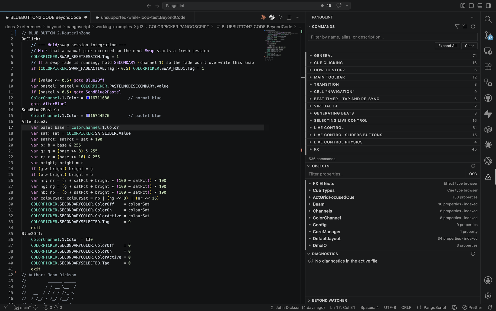
- Install the VS Code extension from the Marketplace:
code --install-extension jd3lasersllc.pangolint - Open a
.BeyondCodefile. PangoLint enables syntax highlighting, diagnostics, completions, and its activity-bar sidebar. - Open the PangoLint view container (laser-warning icon in the activity bar) to browse commands and objects.
- To connect to BEYOND, set
pangolint.beyond.talkTcpHostto the computer running BEYOND. Changepangolint.beyond.talkTcpPortif needed, then runPangoLint: Test BEYOND Connectionfrom the Command Palette.
MCP setup is covered in The PangoLint MCP server.
§ 02The editor
Syntax & semantic highlighting
PangoLint registers .BeyondCode as the
pangoscript language and provides:
- TextMate grammar with scopes for labels, commands, expression functions, variables, object paths, operators, OSC addresses, and string/comment forms.
- Semantic highlighting that distinguishes known commands from unknown identifiers.
- A document outline (Outline view, breadcrumbs) generated from script labels.
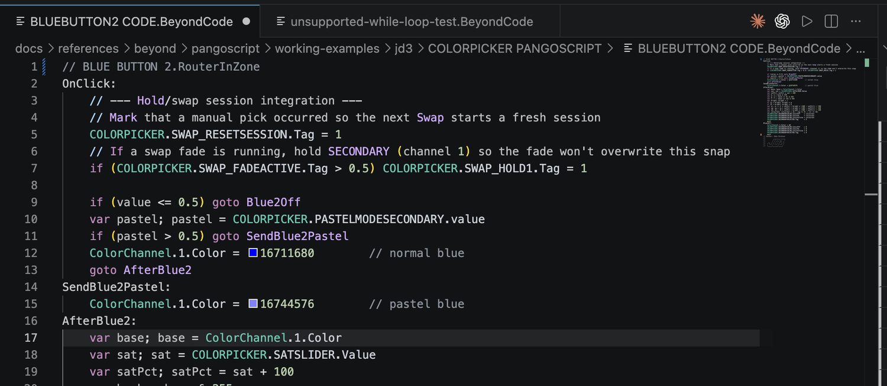
Diagnostics
PangoLint includes 22 diagnostic codes. The bundled diagnostic reference explains each cause and fix; the table below is a summary.
| Code | Severity | What it catches |
|---|---|---|
analysis-limited | warning | The file or a line is too large for a complete check. Runtime sends are blocked until PangoLint can check the full file. |
unclosed-string | error | A line opens " with no closing quote. |
unbalanced-parentheses | warning | Unequal ( / ), or )( order. |
unknown-command | warning | The identifier isn't in the command catalog or recognized as control flow. |
wrong-arg-count | warning | A known command has the wrong number of arguments. Includes the zero-argument case (EnableLaserOutput 1). |
missing-label | warning | Goto X jumps to a label that doesn't exist in the file. |
unsupported-quoted-goto-label | warning | Goto "X" - quoted labels aren't recognized by BEYOND. |
uninitialized-variable | hint | var is read before any assignment. |
unsupported-loop | hint | While / Do / Repeat / Until / Loop - points to the label + If <cond> Goto <label> pattern. |
unsupported-for-range-syntax | hint | for x = a to b - BEYOND only supports for x = a, b. |
unsupported-logical-operator | hint | && / || - BEYOND uses and / or only. |
unsupported-bang-not-equal-operator | hint | != - BEYOND uses <>. |
unsupported-property-index-access | warning | Direct reads of Zone.0.Points[0].X - BEYOND reports invalid array index. |
unsupported-deltavalue-assignment | warning | DeltaValue = … outside its allowed editor context. |
unsupported-deltavalue-command-argument | warning | DeltaValue passed as a command argument outside trigger handlers. |
deltavalue-midi-slot-context | hint | DeltaValue MIDI slot context misalignment. |
unsupported-exit-semicolon | hint | exit; - BEYOND wants bare exit. |
missing-terminal-exit | hint | Script doesn't end with exit. |
extvalue-define-midi-trigger-default | hint | ExtValue editor default in a DefineMidiTrigger body. |
unused-variable | hint | var x declared but never referenced. |
unused-label | hint | Label declared but never Goto'd. |
property-typo | hint | Object.PropertyName doesn't match a known property; suggests the closest valid name. |
Most rules are warnings or hints so lightly documented BEYOND
syntax remains usable. Errors are limited to clear syntax failures
such as an unclosed string. In the Diagnostics
panel, select Why? to open the matching reference
section.
Run PangoLint: Validate Current Script from
the Command Palette to refresh diagnostics for the active
.BeyondCode file and write a report to the
PangoLint: Validation Output channel. The report lists
the severity, rule code, location, and explanation. The notification
links to the Diagnostics panel, Output channel, and Problems panel.
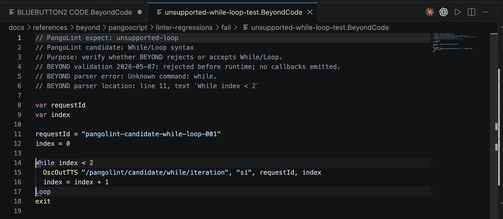
unsupported-loop diagnostic in the editor and minimap. The same issue appears in the Diagnostics panel.![The PangoLint: Validation output channel showing four diagnostic entries: WARNING unbalanced-parentheses [Ln 21, Col 1] - Parentheses are not balanced on this line; WARNING missing-label [Ln 28, Col 1] - Goto target 'DefinitelyNotALabel' does not match a label in this file; WARNING uninitialized-variable [Ln 32, Col 22] - Variable 'zoneName' is read before a local assignment in this file; HINT missing-terminal-exit [Ln 42, Col 1] - BEYOND accepts this shape, but `exit` is recommended to prevent fall-through between script sections. The Problems tab shows a badge of 5.](assets/manual/validate-current-script-output.png)
Completions, hover, signature help
- Command completions - type a command name to see matches from the 529-entry command catalog. Each result includes a description, syntax, and safety tier.
- Property completions - type
Master.(orZone.0.,FX.0., etc.) and PangoLint suggests properties from the schemas. - Goto label completions - after
GotoorIf ... Goto, PangoLint suggests labels declared in the current file. Declared variable goto targets keep their variable-reference behavior. - Hover tooltips - hover any command name for a Markdown card with the syntax form, parameters, safety tier, and a primary example. Hover an object path for property listings, with segment-aware detail (root, array index/button name, property segment).
- Signature help - start typing a command's arguments to get an inline signature panel with parameter names, types, and ranges.
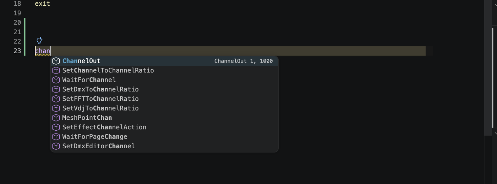
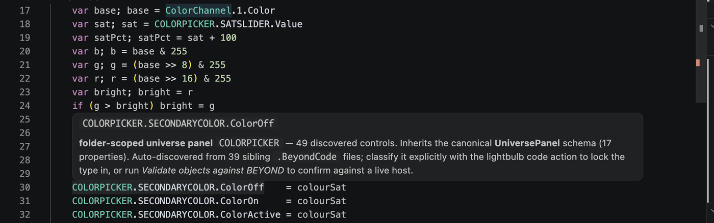
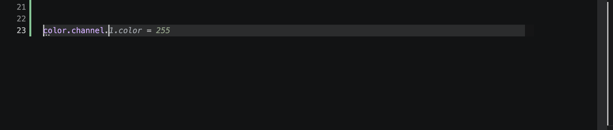
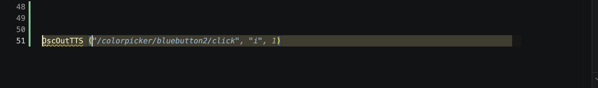
Quick fixes
Click the lightbulb (or Cmd+. / Ctrl+.) on:
- An
unknown-commandwarning - accept the suggested replacement. - A
property-typohint - accept the closest valid property name. - An unknown property-path root - register it as a user
universe (inherits
UniversePanel), a zone alias (inheritsZone), or a master alias (inheritsMaster). See User objects.
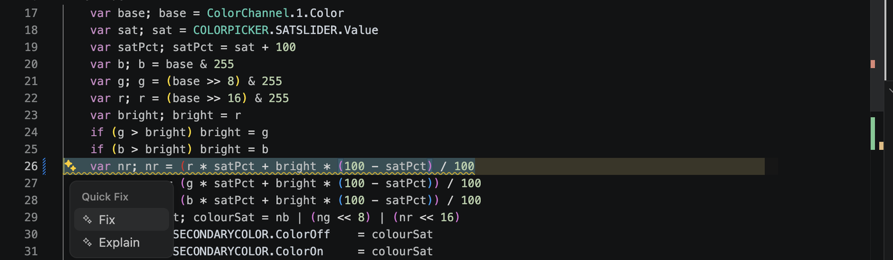
Formatting
Run Format Document (Shift+Alt+F) or enable format on save:
// .vscode/settings.json
{
"[pangoscript]": {
"editor.defaultFormatter": "jd3lasersllc.pangolint",
"editor.formatOnSave": true
}
}The formatter makes only low-risk changes:
- Preserves command order, strings, comments, labels, and unknown syntax verbatim.
- Normalizes whitespace and indentation only where it can do so safely.
- Will not collapse, reorder, or transform any line it doesn't fully recognize.
Snippets
Type the prefix and press Tab. All 10 snippets:
| Prefix | Inserts |
|---|---|
loop | Label + if (cond) goto label loop scaffold with exit. |
for | Counted i = 1; loop; i = i + 1; if (i <= 10) goto loop pattern. |
ifguard | if (cond) goto afterBlock; … afterBlock: skip pattern. |
oscread | OscOutTTS readback skeleton with a typed return. |
oscfeedback | RegisterOscFeedback with a run-prefixed cleanup. |
script | BeginScript / EndScript wrapper. |
onclick | OnClick: handler with an init guard. |
var | var name; name = 0 declaration + initial assignment. |
selectzone | SelectZone + ControlZone destination prefix. |
zonewrite | Direct Zone.0.Brightness = 50 property assignment (recommended over the destination-prefix form). |
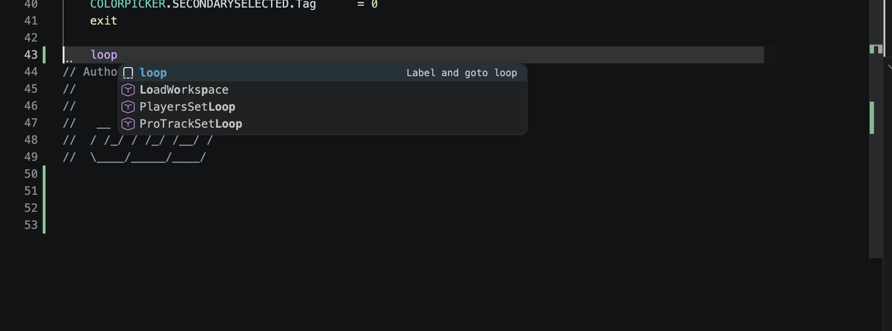
loop snippet appears above command matches. Press Tab to insert it.Color decorators
Inline color swatches appear next to the value for:
ColorBGR <hex>literalsColorRGB <hex>literals<Object>.Color = <int>literal assignments
Click the swatch to open VS Code's color picker. The picker preserves the source format (BGR stays BGR, RGB stays RGB, and integer literals stay integer literals).
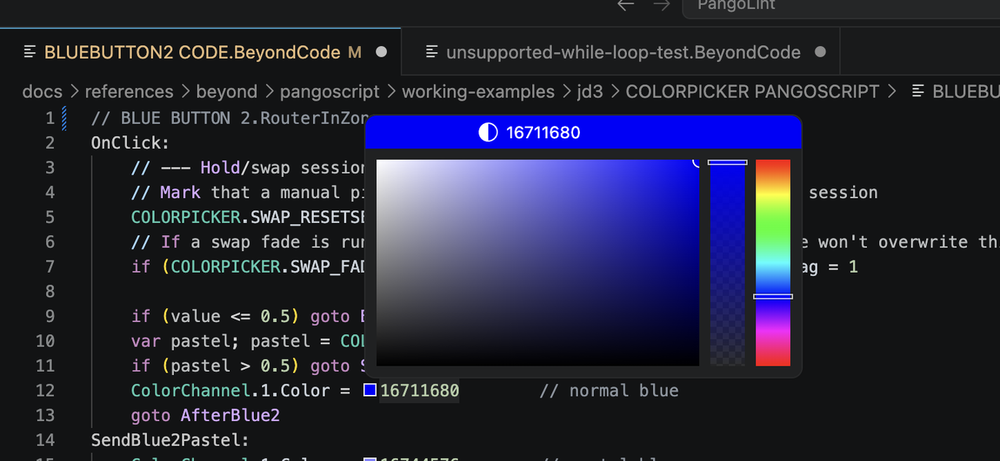
Navigation: Goto label, references, label highlighting
- Go to Definition (F12) on
Goto MyLabeljumps toMyLabel:. - Cursor on a label (declaration or any
Gotoreference) highlights every other occurrence in the file. - Optional References code lens above each
label declaration - enable with
pangolint.codeLens.labelReferences: true.
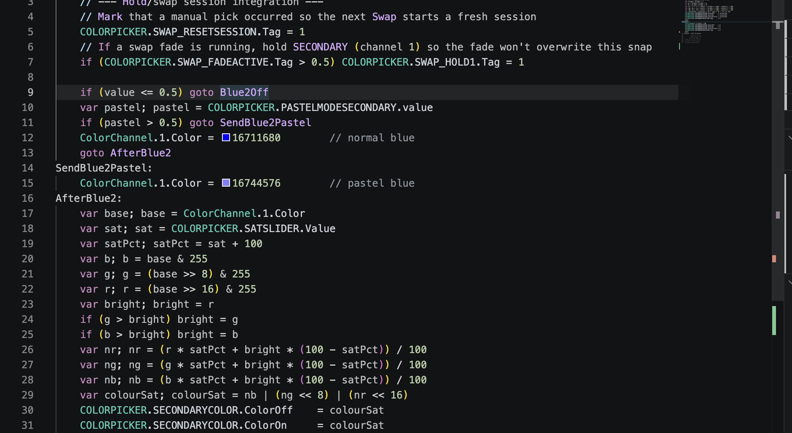
Goto reference highlights that label and its other uses.§ 03The sidebar
Click the laser-warning icon in the activity bar. The PangoLint view container has four stacked panels: Commands, Objects, Diagnostics, and the BEYOND Watcher.
Commands view
Browse 521 PangoScript commands and 9 expression functions. Entries marked prototype, internal, or do-not-use remain available to diagnostics and exact lookup, but do not appear in the list.
- Full-text search across command name, aliases, description, and BEYOND category. Type into the search box at the top.
- Category groups partition the catalog into 35 BEYOND-style categories (General, Cue Clicking, Main Toolbar, Transition, Live Control, FX, and more). Click a category header to collapse / expand its commands; Expand All opens every group at once.
- Click any command row to expand the inline detail panel - signature, BEYOND category, primary example.
- Detail-panel actions:
- Insert at cursor - drops the example into the active editor.
- Copy signature - copies the syntax form to clipboard.
- View in full reference - opens that command in the bundled PangoScript reference.
- Keyboard insert. With a row focused, press Cmd+Enter (macOS) / Ctrl+Enter (Windows / Linux) to insert the example at the cursor - no mouse needed.
- Cross-link from the editor. In any
.BeyondCodefile, hover a command name and clickView in Commands sidebar, or right-click →View in Commands sidebar. The Commands view scrolls to that command and expands its detail panel.
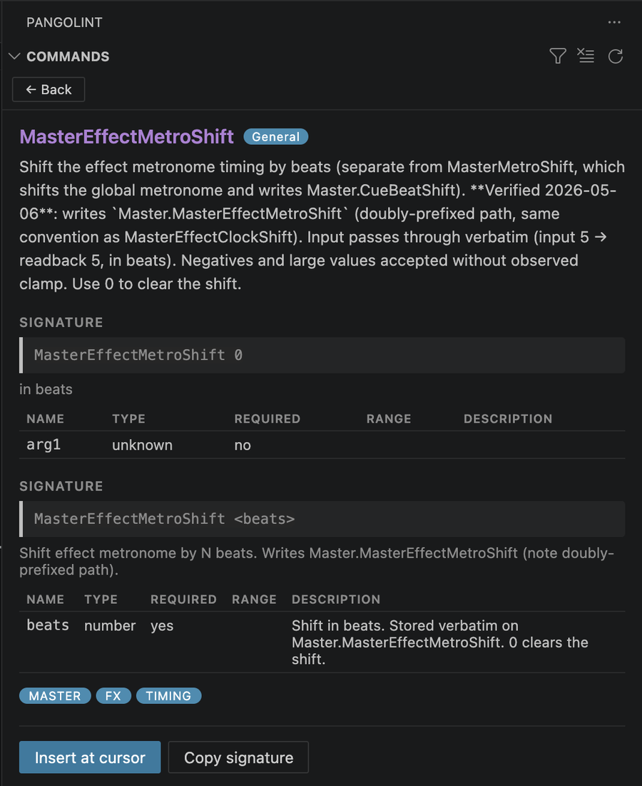
Objects view
Browse the bundled BEYOND object data in three sections:
- FX Effects - every visualizer FX category and effect.
- Cue Types - every cue-type code with its description.
- Objects - Master, Zone, UniversePanel, ColorChannel, DmxOutput, Projector, ProTrack, QShift, and the rest of the bundled schemas with their property listings.
Search covers all three sections. Right-click any property path:
- If a setter command is mapped, Insert drops
it at the cursor (e.g. right-click
Master.BPM→ insertsSetBpm). - View in Commands sidebar - jump to the matching command in the Commands view.
The Objects view is offline. For live values, see Live hover values and the Watcher.
![The Objects panel drilled into FX Effects → Oscillating effect → Geometric → Size X. The expanded Size X effect lists its full property surface: .Enabled, .Oscillator.Absinvert, .Oscillator.Absrevwave, .Oscillator.CENTERX, .Oscillator.Channel, .Oscillator.Damping, .Oscillator.Finish, .Oscillator.Period, .Oscillator.Phase, .Oscillator.Secondwave, .Oscillator.Start, .Oscillator.Waveform, .Oscillator.Waveperiod, .Oscillator.Wavespeed, .Oscillator.Width, .RouterInZone, .RouterMode, .RouterOutZone, .TimeActive, .TimeClock, .TimeDuration, .TimeDurationInBeat, .TimeEnabled, .TimeMetro, .TimeName, .TimeStateCanRestart. Sibling effects Size Y, Size Z, Roto Y, Roto X, Roto Z, Position X, Position Y, Position Z are shown collapsed below.](assets/manual/sidebar-objects.png)
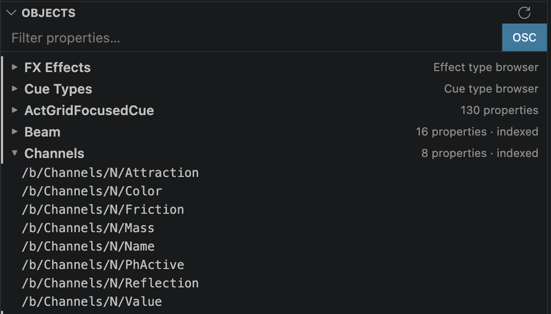
Diagnostics view
Issues in the active .BeyondCode file, grouped by
rule. Each rule group has:
- A row per diagnostic. Click to jump to the source range.
- A
Why?action that opens that rule in the bundled diagnostics reference. It works offline.
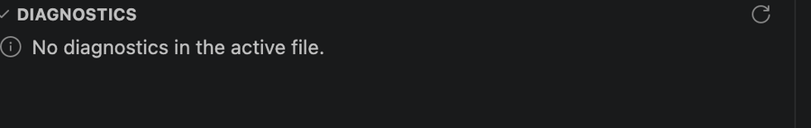
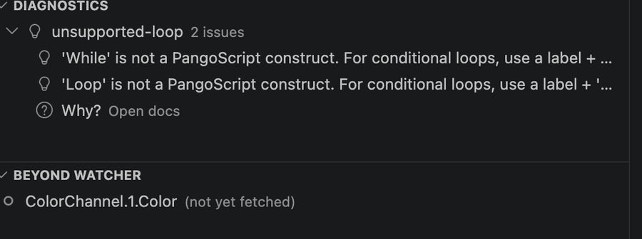
Why? opens the bundled rule reference offline.§ 04BEYOND runtime integration
PangoLint can connect to BEYOND for connection checks, property
reads, and controlled Talk batch sends.
All runtime features require a trusted workspace.
Readback-only features require an explicit command or
pangolint.beyond.liveHoverValues: true.
Write/script execution features additionally require
pangolint.beyond.allowScriptExecution: true and an
in-app confirmation prompt. Runtime target settings are
machine-scoped so a workspace cannot silently repoint PangoLint at
a different BEYOND host.
Validate scripts in BEYOND and follow all laser safety, zoning, output, and show-control procedures. PangoLint's lint check is not a safety check. It cannot reason about beam paths, audience separation, scan-fail behavior, or other operational laser-safety concerns.
Test BEYOND connection
Command Palette → PangoLint: Test BEYOND Connection.
PangoLint sends a small OscOutTTS ping over the
configured BEYOND Talk path, then waits for the OSC echo on
oscListenHost:oscListenPort. A notification reports
success or the specific failure (DNS lookup, bind, no callback,
etc.). This check is read-only. It does not change
projector, output, geometry, or zoning state.
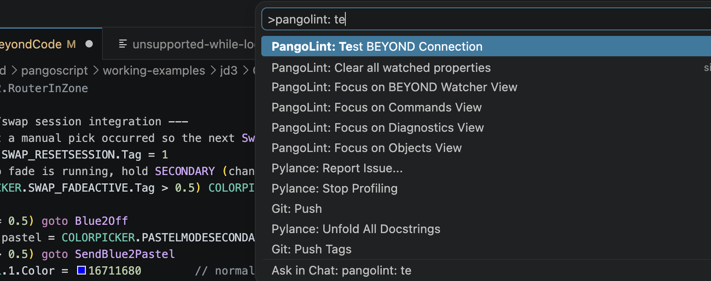
pangolint: te' typed. The top match - 'PangoLint: Test BEYOND Connection' - is highlighted; below it are other PangoLint commands: Clear all watched properties, Focus on BEYOND Watcher View, Focus on Commands View, Focus on Diagnostics View, Focus on Objects View.">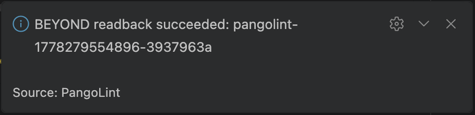
User objects (register a universe / zone alias)
PangoScript files can reference workspace-specific identifiers
such as MyUniverse.Button1.X or
MainStage.Brightness. PangoLint doesn't know these names
until you register them. Use the lightbulb action on an unknown root
to:
- Register
<Root>as a user universe - inherits theUniversePanelschema, with workspace-scanned button names merged in asarrayIndices. - Register
<Root>as a zone alias - inherits theZoneschema. - Register
<Root>as a master alias - inherits theMasterschema.
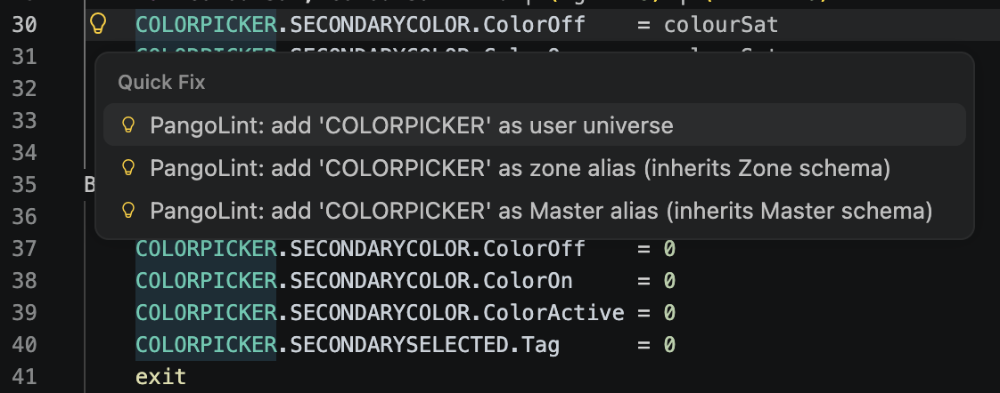
.pangolint/user-objects.json.PangoLint stores these entries in
.pangolint/user-objects.json at the workspace root.
View or remove them with PangoLint: Show User
Objects and PangoLint: Remove User
Object in the Command Palette.
When pangolint.folderScopedUniverses: true
(default), PangoLint also auto-discovers universe panels by
scanning sibling .BeyondCode files. An unknown root
used in at least two files in the same folder is treated as a
universe panel.
Send Talk batch to BEYOND
Two commands send straight-line PangoScript over BEYOND Talk:
- PangoLint: Send Talk Batch to BEYOND -
sends the entire active
.BeyondCodefile. - PangoLint: Send Selection as Talk Batch -
sends just the highlighted selection. Right-click →
Send Selection as Talk Batchworks inside any.BeyondCodeeditor.
Before sending, PangoLint requires:
pangolint.beyond.allowScriptExecution: true- explicit opt-in.- Workspace must be trusted.
- Confirm modal - by default,
confirmRunEachSession: trueshows the modal every run, not just the first. Recommended on for safety. - Lint-before-send refuses any text that fires an error-severity diagnostic, or any text where PangoLint's analysis limits prevent a complete lint pass. Hint and warning diagnostics appear in the response but don't block.
- Control-flow blocked - BEYOND Talk isn't
editor-equivalent. PangoLint blocks labels,
goto,if, loops, waits, andexitin this path. Paste full control-flow scripts directly into BEYOND's PangoScript editor instead.
After a successful send, PangoLint: Re-send last Talk Batch sends the same batch again. It skips linting but keeps the trust, opt-in, and confirmation checks.
Talk TCP can show BEYOND command replies and parser errors in the PangoLint: Run Output channel. Talk UDP is a valid primary transport, but it is send-only from PangoLint's side, so the Output channel reports datagram send status instead of BEYOND parser replies.
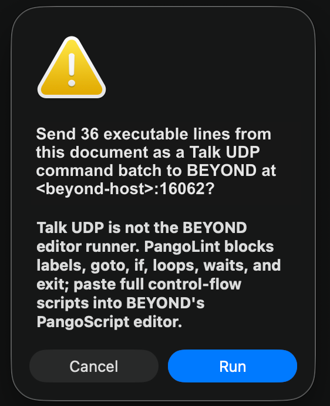
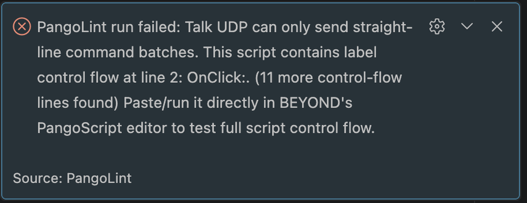
BEYOND's PangoScript editor paste path treats LF-only
clipboard text as one logical line. .BeyondCode
files intentionally check out with CRLF endings. Confirm CRLF
before copying when you bypass PangoLint and paste directly.
Fetch / set object values
- PangoLint: Fetch object value from BEYOND -
place the cursor on a property path such as
Master.Brightness, then run the command or use the editor context menu. PangoLint shows the value in a notification and thePangoLint: RunOutput channel. - PangoLint: Set object value on BEYOND - place the cursor on a property path, run the command, and enter the new value. The command uses the same safety checks as Send Talk batch and verifies the write with a readback. Enter strings without quotes.
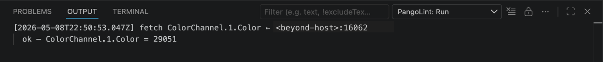
PangoLint: Run Output channel.Watcher: pin a property
The BEYOND Watcher is the bottom panel of the PangoLint sidebar. It's always visible; pinned properties appear inside it. Pin / unpin from the editor:
- Right-click a property path → Pin property to BEYOND Watcher.
- Right-click a watched item in the view → Unpin from Watcher.
Watcher view actions:
- Refresh Watcher - re-reads every pinned property in one batch.
- Clear all watched properties.
The watcher refreshes only when requested; it does not poll.
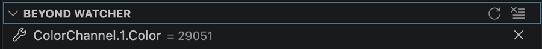
Validate objects in this file against BEYOND
Command Palette → PangoLint: Validate objects in this file against BEYOND.
PangoLint finds unknown and folder-discovered object roots in the
active file. It reads <root>.<button>.Caption for
up to 32 candidates. Confirmed roots are cached for the current VS Code
session; inconclusive and failed reads are reported in the
PangoLint: Run Output channel and a notification. Bundled
schemas and registered user objects are skipped.
Live hover values
Set pangolint.beyond.liveHoverValues: true to
augment property-path hover tooltips with the current BEYOND
value. Values are cached for 30 seconds per path. This setting is
off by default because hovering sends network requests.
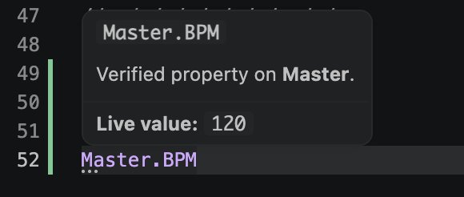
Master.BPM value.§ 05The PangoLint MCP server
pangolint-mcp is a
Model Context
Protocol stdio server for command lookup and PangoScript
linting. It uses the same bundled data as the extension.
When to use it
- You want an AI coding tool to verify PangoScript command names against PangoLint's catalog.
- You want an AI coding tool to lint generated PangoScript before showing you the result.
- You want an AI coding tool to send linted PangoScript to BEYOND after you explicitly enable runtime writes.
If you don't use an AI coding tool for PangoScript, you don't need the MCP server.
Install & configure
Install the published package from npm:
npm install -g pangolint-mcpOr install the pangolint-mcp tarball attached to a
GitHub Release:
npm install -g ./pangolint-mcp-0.9.8.tgzFor local development with Node.js 20+, build the same tarball from this repo:
npm run package:mcp
npm install -g ./mcp/pangolint-mcp-0.9.8.tgzAdd the server to your MCP client:
Use PangoLint as the client-side server key when
your client allows mixed-case names. Some clients show this key in
tool-call UI.
Claude Desktop (claude_desktop_config.json)
{
"mcpServers": {
"PangoLint": { "command": "pangolint-mcp" }
}
}Claude Code (project .mcp.json)
{
"mcpServers": {
"PangoLint": { "command": "pangolint-mcp" }
}
}Codex CLI
codex mcp add PangoLint -- pangolint-mcp
codex mcp get PangoLintIf the old lowercase pangolint alias is already
registered, run codex mcp remove pangolint first, then
add it again.
To enable read runtime tools in Codex, add the startup env vars when you register the server:
codex mcp add PangoLint \
--env PANGOLINT_MCP_RUNTIME_READ=enabled \
--env PANGOLINT_MCP_BEYOND_TALK_TRANSPORT=tcp \
--env PANGOLINT_MCP_BEYOND_TALK_TCP_HOST=127.0.0.1 \
--env PANGOLINT_MCP_BEYOND_TALK_TCP_PORT=16063 \
-- pangolint-mcpCursor (.cursor/mcp.json)
{
"mcpServers": {
"PangoLint": { "command": "pangolint-mcp" }
}
}VS Code (.vscode/mcp.json)
{
"servers": {
"PangoLint": {
"type": "stdio",
"command": "pangolint-mcp"
}
}
}To enable read runtime tools (network access to a local
BEYOND), pass PANGOLINT_MCP_RUNTIME_READ=enabled and
your BEYOND target as env vars. Add
PANGOLINT_MCP_RUNTIME_WRITE=enabled only when you also
want agents to send scripts through runScript.
{
"mcpServers": {
"PangoLint": {
"command": "pangolint-mcp",
"env": {
"PANGOLINT_MCP_RUNTIME_READ": "enabled",
"PANGOLINT_MCP_BEYOND_TALK_TRANSPORT": "tcp",
"PANGOLINT_MCP_BEYOND_TALK_TCP_HOST": "127.0.0.1",
"PANGOLINT_MCP_BEYOND_TALK_TCP_PORT": "16063"
}
}
}
}The full env-var list lives in mcp/README.md.
Knowledge tools (always on)
11 offline tools are always available:
| Tool | What it does |
|---|---|
lookupCommand | Catalog entry for one command name or alias. |
searchCommands | Search names, aliases, descriptions, categories, forms, parameters, notes, and tags. Can filter by safetyTier. |
lookupObject | Object lookup for bundled schemas and exact Object Tree paths (for example WS.N.N.Caption and FX.N.N.N.Oscillator.Period). |
listObjects | Bundled object roots and Object Tree families such as WS, FX, and DmxOutput. |
searchObjectProperties | Ranked search over BEYOND Object Tree property paths (e.g. Master.ShowSpeed, FX.N.N.N.Oscillator.Period). |
lookupObjectProperty | Exact lookup for a single property path. |
lookupPropertyControls | Exact property lookup with Object Tree path, direct /b/ address, PangoScript command links, OSC routes, range data, readback, and behavior metadata. |
searchPropertyControls | Search property controls by path, OSC route, command name, context, and value metadata. |
lintScript | Check PangoScript text and return its diagnostics. |
explainDiagnostic | Markdown documentation for one diagnostic code. |
getServerConfig | Current configuration and available tools. |
Runtime tools (opt-in)
5 tools that talk to the configured BEYOND host. Read
runtime and write runtime are separate opt-ins. Each tool returns
{ ok: false, blocked: true } unless the matching
runtime tier was enabled at server startup.
| Tool | Tier | What it does |
|---|---|---|
healthCheck | T0 | Requires PANGOLINT_MCP_RUNTIME_READ=enabled. DNS + UDP-socket reachability of the configured BEYOND UDP target. Doesn't verify BEYOND accepts commands. |
checkTalkConnection | T0 | Requires PANGOLINT_MCP_RUNTIME_READ=enabled. Opens Talk TCP and checks greeting, configured Echo mode, Hello, and Version replies. |
readBeyondProperty | T1 (read) | Requires PANGOLINT_MCP_RUNTIME_READ=enabled. Single readback of a property path (Master.Brightness, Zone.0.Red, …) and returns the value. Talk TCP readbacks use the configured Echo mode. |
readReceivedOscMessages | T1 (read) | Requires PANGOLINT_MCP_RUNTIME_READ=enabled. Listens on the configured OSC callback port for a bounded receive window and returns decoded OSC messages with optional exact-address or prefix filters. |
runScript | T2+ (write) | Requires PANGOLINT_MCP_RUNTIME_WRITE=enabled. Lints the supplied text; refuses on any error-severity diagnostic; otherwise sends via configured BEYOND Talk transport. Talk TCP reports the selected Echo mode. |
Before sending, runScript checks the script with
PangoLint. An error or incomplete analysis blocks the send.
Hints and warnings are returned but do not block it. This check
covers syntax, not operational laser safety.
MCP resources
9 bundled resources are available:
| URI | Contents |
|---|---|
pangoscript://catalog/commands | Command catalog (JSON). |
pangoscript://catalog/property-coverage | Command-to-property mapping coverage (JSON). |
pangoscript://schemas/objects | Object schemas (JSON). |
pangoscript://diagnostics/codes | Diagnostics doc page (Markdown). |
pangoscript://reference/operators | Operator reference (Markdown). |
pangoscript://reference/syntax | Parser-shape reference (Markdown). |
pangoscript://reference/command-reference | Full command reference (Markdown). |
pangoscript://reference/master-object-tree | Object Tree root reference (Markdown). |
pangoscript://reference/object-model | Object model overview (Markdown). |
Each resource includes its byte size.
§ 06Reference: settings
All settings use the pangolint.* prefix. Runtime
settings under pangolint.beyond.* are machine-scoped
and cannot be set by a workspace.
| Setting | Default | Purpose |
|---|---|---|
pangolint.beyond.talkTransport | auto | auto, tcp, or udp. Auto tries Talk TCP first and uses UDP only when fallback is explicitly allowed. |
pangolint.beyond.talkTcpHost | 127.0.0.1 | BEYOND Talk TCP host. |
pangolint.beyond.talkTcpPort | 16063 | BEYOND Talk TCP port. |
pangolint.beyond.talkTcpEchoMode | 1 | Talk TCP Echo mode used after optional password authentication. 1 returns brief status replies. 2 adds input echoes that are useful for parser feedback. |
pangolint.beyond.talkUdpHost | 127.0.0.1 | BEYOND Talk UDP host. |
pangolint.beyond.talkUdpPort | 16062 | BEYOND Talk UDP port. |
pangolint.beyond.talkUdpFallbackAllowed | false | Allow unauthenticated UDP fallback when TCP is unavailable before authentication or command send begins. |
pangolint.beyond.talkTcpPassword | "" | Optional BEYOND TCP Talk Server password. Redacted from runtime output. |
pangolint.beyond.talkHost | 127.0.0.1 | UDP host alias. |
pangolint.beyond.talkPort | 16062 | UDP port alias. |
pangolint.beyond.oscListenHost | 0.0.0.0 | Local interface used for OSC callbacks from BEYOND. |
pangolint.beyond.oscListenPort | 7000 | Local UDP port used for OSC callbacks from BEYOND. |
pangolint.beyond.readbackTimeoutMs | 3000 | Timeout for OSC readback callbacks (ms). |
pangolint.beyond.allowScriptExecution | false | Allow sending BEYOND Talk command batches. Off by default. |
pangolint.beyond.confirmRunEachSession | true | Confirm modal before each script-run (recommended on). |
pangolint.beyond.liveHoverValues | false | Augment hover tooltips with live BEYOND values. Generates network traffic per hover. |
pangolint.codeLens.labelReferences | false | Show N references code lens above each label declaration. |
pangolint.folderScopedUniverses | true | Auto-discover universe panels by scanning sibling .BeyondCode files. |
pangolint.diagnostics.highlightStyle | lineBackground | Controls extra editor emphasis for diagnostics: squiggle only, diagnostic-range background, or whole-line background. |
pangolint.diagnostics.inlineMessages | off | Appends diagnostic messages after source lines when set to warningsAndAbove or all. |
§ 07Reference: commands
User-facing commands appear in the Command Palette under PangoLint:.
Editor & validation
| Command | What it does |
|---|---|
pangolint.validateCurrentScript | Re-run diagnostics on the active .BeyondCode file and write a report to the PangoLint: Validation Output channel. |
BEYOND runtime
| Command | What it does |
|---|---|
pangolint.checkBeyondConnection | Test BEYOND Connection (readback-only ping). |
pangolint.runScript | Send the current file as a Talk batch after safety checks. |
pangolint.runSelection | Send the current selection as a Talk batch after safety checks. |
pangolint.replayLastScript | Re-send the last Talk batch verbatim. |
pangolint.fetchObjectValue | Read a property path from BEYOND. |
pangolint.setObjectValue | Write a property path on BEYOND after safety checks. |
pangolint.validateObjectsAgainstBeyond | Check unknown and folder-discovered object roots against BEYOND. |
pangolint.pinToWatcher | Pin a property path to the BEYOND Watcher. |
pangolint.unpinFromWatcher | Unpin a property from the Watcher. |
pangolint.refreshWatcher | Re-read every pinned property. |
pangolint.clearWatcher | Unpin all watched properties. |
User objects
| Command | What it does |
|---|---|
pangolint.addUserObject | Register a user object from a quick fix. |
pangolint.removeUserObject | Remove a registered universe / zone alias / master alias. |
pangolint.showUserObjects | List currently registered user objects. |
Sidebar
| Command | What it does |
|---|---|
pangolint.sidebar.refresh | Refresh sidebar (Commands / Objects / Diagnostics). |
pangolint.sidebar.filterCommands | Open the filter prompt for the Commands view. |
pangolint.sidebar.clearFilter | Clear the Commands filter. |
pangolint.sidebar.insertAtCursor | Insert the focused command's example at the cursor. |
pangolint.sidebar.insertSelectedCommand | Same, bound to Cmd+Enter / Ctrl+Enter when the Commands view is focused. |
pangolint.sidebar.copySignature | Copy the focused command's signature to the clipboard. |
pangolint.openReferenceSite | Open the bundled offline PangoScript reference site in the default browser. |
pangolint.sidebar.revealDiagnostic | Reveal the focused diagnostic at its source range. |
pangolint.sidebar.openDiagnosticDocs | Open the reference for the focused diagnostic. |
pangolint.sidebar.showCommand | Open a specified command in the Commands sidebar. |
pangolint.sidebar.showCommandAtCursor | View the command at the editor cursor in the Commands sidebar. |
§ 08Reference: keybindings
| Combo (macOS / others) | Command | When |
|---|---|---|
| Cmd+Enter / Ctrl+Enter | pangolint.sidebar.insertSelectedCommand | Commands view focused, editor open on a .BeyondCode file. |
| Cmd+. / Ctrl+. | (VS Code default) Quick fix | On any diagnostic with a code action. |
| F12 | (VS Code default) Go to Definition | On a Goto MyLabel reference. |
| Shift+Alt+F | (VS Code default) Format Document | In a .BeyondCode file. |
§ 09Safety, privacy, and data
PangoLint is offline by default and requires explicit action for network access or file changes:
- Network behavior. Network requests occur only
when you run a runtime command or enable
pangolint.beyond.liveHoverValues.- Knowledge tools, the sidebar, completions, formatting, diagnostics, and normal hover are offline.
Test BEYOND Connectionis readback-only (anOscOutTTSping).Send Talk Batch,Set object value, and the MCPrunScriptrequire explicit opt-in (allowScriptExecution: truefor the extension;PANGOLINT_MCP_RUNTIME_WRITE=enabledfor the MCP server) and a trusted workspace.
- File changes. PangoLint writes to
two places only:
.pangolint/user-objects.json(when you accept a register-as code action) and the active editor (when you explicitly insert a command / accept a quick fix). No silent edits. - Bundled data. PangoLint includes generated command and Object Tree data. The public repository does not include copies of Pangolin manuals, help files, command export text, or OSC HTML.
§ 10Troubleshooting
Test BEYOND Connection times out.
Confirm pangolint.beyond.talkTcpHost matches the
BEYOND machine's IP (not 127.0.0.1 if BEYOND is on a
separate box), and confirm pangolint.beyond.talkTcpPort
matches the Talk TCP server port. If you explicitly use UDP, check
pangolint.beyond.talkUdpHost and
pangolint.beyond.talkUdpPort instead. Confirm BEYOND
is configured to send OSC Out callbacks back to your laptop's IP
on pangolint.beyond.oscListenPort. macOS / Windows
firewall must allow the listener port.
Talk batch sent, BEYOND unchanged.
Check whether the script uses control flow
(label: / goto / if /
loops / waits / exit). BEYOND Talk is for straight-line
command batches only; paste full scripts directly into BEYOND's
PangoScript editor. Check BEYOND's Notification Center for command
errors. In BEYOND Build 2060 and later, a muted Notification Center
does not open automatically, so open its tab while troubleshooting.
Pasted script collapsed into one line.
BEYOND's paste path treats LF-only clipboard text as one
logical line. .BeyondCode files intentionally check
out with CRLF endings. Confirm CRLF before copying.
Property hover says "unknown root".
The root identifier isn't in the bundled schemas and hasn't
been registered as a user object yet. Click the lightbulb on the
unknown root to register it as a universe / zone alias / master
alias, or enable pangolint.folderScopedUniverses so
PangoLint auto-discovers universes from sibling files.
MCP runtime tool returns
{ ok: false, blocked: true }.
The server started without the required runtime access. Add
PANGOLINT_MCP_RUNTIME_READ=enabled for
healthCheck, readBeyondProperty, or
readReceivedOscMessages, or
PANGOLINT_MCP_RUNTIME_WRITE=enabled for
runScript, then restart the client. Retry after the
server restarts.
Markdown reference link from Why? doesn't open.
The bundled diagnostics doc lives inside the VSIX. Reload the VS Code window after upgrading PangoLint so the new doc path resolves.